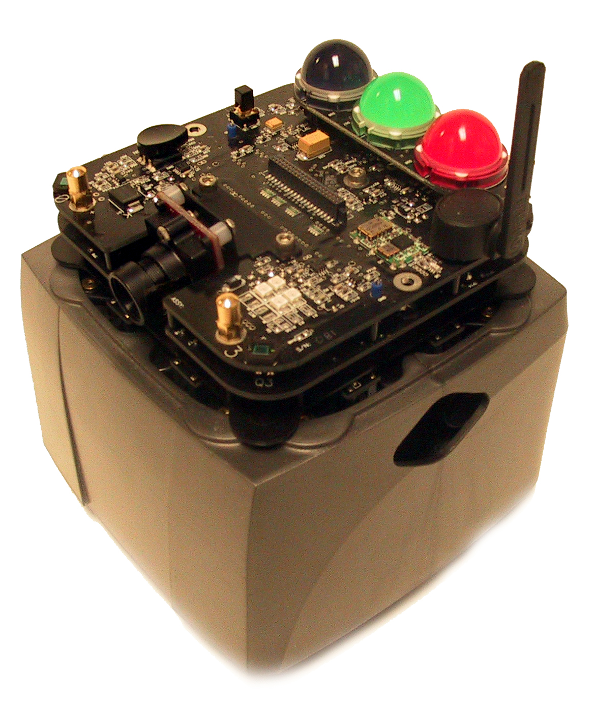

Swarmbot is a very complex robot dreamed up and created by James McLurkin while he was working at iRobot and at the Computer Science Artificial Intelligence Lab at MIT as a graduate student. His robots specialize in sensing the environment around them using distance and other sensors, planning what the action should be using a distributed algorithm (each robot does some computation), and act by moving, bleeping, or blinking their cool LED lights in unison, which is a ton of fun to watch. Definitely among the most complex out there! More information is on his website here.
AFS Path: /afs/andrew.cmu.edu/usr23/nhergert/gitrepo/16-311GeneralRobotics/hw1Matvec/matvec
// Welcome to the Homework 1 Skeleton file. // Written by your industrious TA Cuban // Solution written by Nolan Hergert #include <stdio.h> #include <stdlib.h> #include <string.h> /* STEP 1: UNDERSTAND THE ENUMERATED VARIABLES (STRUCTURES) */ typedef struct vector { float v[3]; } vector; vector g_vecs[26]; typedef struct matrix { float v[3][3]; } matrix; matrix g_mats[26]; /* STEP 2: UNDERSTAND THE PRINT VECTOR COMMAND */ void PrintVector( vector* pVec ) { /* %f prints a float. pVec is a pointer to a vector, so you must dereference using the -> operator, then access the member array v */ printf("%f %f %f\n", pVec->v[0], pVec->v[1], pVec->v[2] ); } /* STEP 7: Just review step 2 for fun and now look at this function. Essentially, it is a islower command */ int IsVector( char* c ) { /* *c is the first character in the string pointed to by the character pointer c, and thus can be compared with the constants 'a' and 'z'. Note that 'a' is a character, whereas "a" is a string (and is thus null-terminated). The lower-case letters are contiguous in the ASCII table, so we can just check if we're between the boundaries. */ if( (*c) >= 'a' && (*c) <= 'z' ) return 1; return 0; } /* STEP 8: This is perhaps the most confusing part of the whole program. Get by this, and all is ok. Remember, we want a pointer to an element in the array. Take a short break and make sure you understand pointers */ vector* GetVector( char* c ) { /* Funny-looking, isn't it? Here's the basic idea: (*c) - 'a' gives you a number in the range [0 25], since char's can be treated as integers in the range [0 255], and subtracting 'a's value from a lower-case letter shifts *c down to the [0 25] range. the "&" gives you the address of the element of g_vecs we're interested in, since we're returning a pointer. */ return &g_vecs[ (*c) - 'a' ]; } /* We will give you the following three functions for free */ /* STEP 9: Adding vectors should be easy */ void AddVectors( vector* pA, vector* pB, vector* pResult ) { int i; /* This is error-checking, and wasn't required */ if(pA == NULL || pB == NULL || pResult == NULL) return; /* Loop through the 3 elements of the vectors and add them; store in the vector pointed to by pResult */ for(i = 0; i < 3; i++) pResult->v[i] = pA->v[i] + pB->v[i]; } /* Step 10: same as get vector */ matrix* GetMatrix( char* c ) { /* Same as GetVector, 'cept with a different constant */ return &g_mats[ (*c) - 'A' ]; } /* Step 11: trivial */ int IsMatrix( char* c ) { /* Same as IsVector, 'cept with different constants */ if( (*c) >= 'A' && (*c) <= 'Z' ) return 1; return 0; } void PrintMatrix( matrix* mat ) { /* Put newlines (\n's) in strategic places to make it look pretty. The 5 in %.5f makes each number take print exactly 5 digits following the "." */ printf("%.5f %.5f %.5f\n%.5f %.5f %.5f\n%.5f %.5f %.5f\n", mat->v[0][0], mat->v[0][1], mat->v[0][2], mat->v[1][0], mat->v[1][1], mat->v[1][2], mat->v[2][0], mat->v[2][1], mat->v[2][2]); } void DotVectors ( vector* a, vector* b, vector* result) { int i; if (!a || !b || !result) { printf("Uninitialized vector!\n"); return; } for(i = 0; i < 3; i++) { result->v[i] = a->v[i] * b->v[i]; } } void CrossVectors ( vector* a, vector* b, vector* result) { int i; if (!a || !b || !result) { printf("Uninitialized vector!\n"); return; } for(i = 0; i < 3; i++) { result->v[i] = a->v[(i+1)%3]*b->v[(i+2)%3] - a->v[(i+2)%3]*b->v[(i+1)%3]; } } void MultMatVec ( matrix* m, vector *v, vector* result) { int i; if (!m || !v || !result) { printf("Uninitialized matrix/vector!\n"); return; } for(i = 0; i < 3; i++) { result->v[i] = v->v[0]*m->v[i][0] + v->v[1]*m->v[i][1] + v->v[2]*m->v[i][2]; } } void AddMatrices (matrix* a, matrix* b, matrix *result) { int i,j; vector * v1, v2; if (!a || !b || !result) { printf("Uninitialized matrix!\n"); return; } for(i = 0; i < 3; i++) { for (j = 0; j < 3; j++) { result->v[i][j] = a->v[i][j] + b->v[i][j]; } } } void MultMatrices (matrix* a, matrix* b, matrix *result) { int i,j; if (!a || !b || !result) { printf("Uninitialized matrix!\n"); return; } for(i = 0; i < 3; i++) { for (j = 0; j < 3; j++) { result->v[i][j] = a->v[i][0]*b->v[0][j] + a->v[i][1]*b->v[1][j] + a->v[i][2]*b->v[2][j]; } } } /* Do all kinds of fun foo */ /* STEP 4: This is where the action is at. This function is the true gift. We get our intput into ptokens, and then start deciding what to do with it. If there is only one ptoken, this is easy, print out somehing. If there are 11 tokens, this is easy too, it is assign a matrix. Everything else has five tokens. Note, there is a perhaps confusing decision tree later on summarizing this */ int Parse( char* pString ) { char* pTokens[11]; // The most tokens we'll get is 11 (matrix assignment). char* pCurrTok; int nTokens; int i, j; matrix* mat; vector* vec; nTokens = 0; // Early-out. If the string is equal to END then end. if( 0 == strcmp( "END", pString ) ) /* strcmp compares two strings */ { // Time to quit return 1; } /* STEP 5: SEE HOW pTokens is stuffed */ pCurrTok = (char*)strtok( pString, " \n" ); while( pCurrTok ) { // Assign the current token. pTokens[nTokens++] = pCurrTok; // Grab the next one. pCurrTok = (char*)strtok( NULL, " \n" ); } /* The following is a decision tree. If you find this confusing, please skit it. After you read the code, come back to it and it will make loads of sense */ /* Decision tree: L1: Number of tokens: 1: Print 11: Matrix assignment 5: L2 3rd token a digit? Y: vector assignment N: L3 Is first token a vector? Y: L4 (a vector op) Is 4th token a... "+": vector addition ".": vector dot product "*": Is 3rd token a vector? Y: vector cross product N: matrix/vector multiplication N: L4 (a matrix op) Is 4th token a... "+": matrix addition "*": matrix multiplication */ switch(nTokens) { /* Print case (only one token) */ /* STEP 6: UNDERSTAND VECTOR assignment. Go look at some previously defined functions now */ case 1: /* Only one thing was inputted, so it is either a vector or a matrix */ if(IsVector(pTokens[0])) /* If a lower case letter, then this function returns a 1 which is like "true," 0 is false Note, we could have used islower and isupper */ { PrintVector(GetVector(pTokens[0])); } else if(IsMatrix(pTokens[0])){ PrintMatrix(GetMatrix(pTokens[0])); } else return 0; /* If the character is not a letter, uppoer or lower case, then return a zero */ break; /* Matrix assignment (only operation with 11 tokens) */ case 11: printf("Assigning to matrix\n"); mat = GetMatrix(pTokens[0]); /* Returns a POINTER to a matrix in g_mats[ ], so mat is a pointer to a structure */ for(i = 0; i < 3; i++) for(j = 0; j < 3; j++) { mat->v[i][j] = atof(pTokens[2 + 3*i + j]); /* one-dim --> two-dim */ } break; /* All kinds of foo (there are many operations with 5 tokens)*/ case 5: /* Check if the third token is a digit or minus sign (=> assignment) */ if(isdigit(pTokens[2][0]) || pTokens[2][0] == '-') { printf("Assigning to vector\n"); /* Vector assignment */ vec = GetVector(pTokens[0]); for(i = 0; i < 3; i++) vec->v[i] = atof(pTokens[2 + i]); } else if(IsVector(pTokens[0])) { if(0 == strcmp( pTokens[3], "+")) { printf("Adding vectors\n"); AddVectors(GetVector(pTokens[2]), GetVector(pTokens[4]), GetVector(pTokens[0])); } else if( 0 == strcmp( pTokens[3], ".")) { printf("Dotting vectors\n"); DotVectors(GetVector(pTokens[2]), GetVector(pTokens[4]), GetVector(pTokens[0])); } else if( 0 == strcmp( pTokens[3], "*")) { if(IsVector(pTokens[2])) { printf("Crossing vectors (beware the Stay-Puft Marshmallow Man!)\n"); CrossVectors(GetVector(pTokens[2]), GetVector(pTokens[4]), GetVector(pTokens[0])); } else { printf("Doing Matrix-Vector multiplication\n"); MultMatVec(GetMatrix(pTokens[2]), GetVector(pTokens[4]), GetVector(pTokens[0])); } } } /* END OF THE ISVECTORS */ else if(IsMatrix(pTokens[0])) { if(0 == strcmp(pTokens[3], "+")) { printf("Adding matrices\n"); AddMatrices(GetMatrix(pTokens[2]), GetMatrix(pTokens[4]), GetMatrix(pTokens[0])); } else if(0 == strcmp(pTokens[3], "*")) { printf("Multiplying matrices\n"); MultMatrices(GetMatrix(pTokens[2]), GetMatrix(pTokens[4]), GetMatrix(pTokens[0])); } } break; default: return 0; } // Don't quit return 0; } /* Ooooh! Main! How important! */ /* STEP 3 Must always look at the main, which pretty much prints a prompt and parses some text */ int main() { char buff[80]; int done = 0; while( !done ) { fprintf(stdout, "? "); /* The ? is a prompt. Please use whatever you want */ // Read in a line of text gets( buff ); // Parse it and continue if( Parse( buff ) ) { // Parse returns 1 if it's time to exit. done = 1; } } return 0; }
{kind=link}